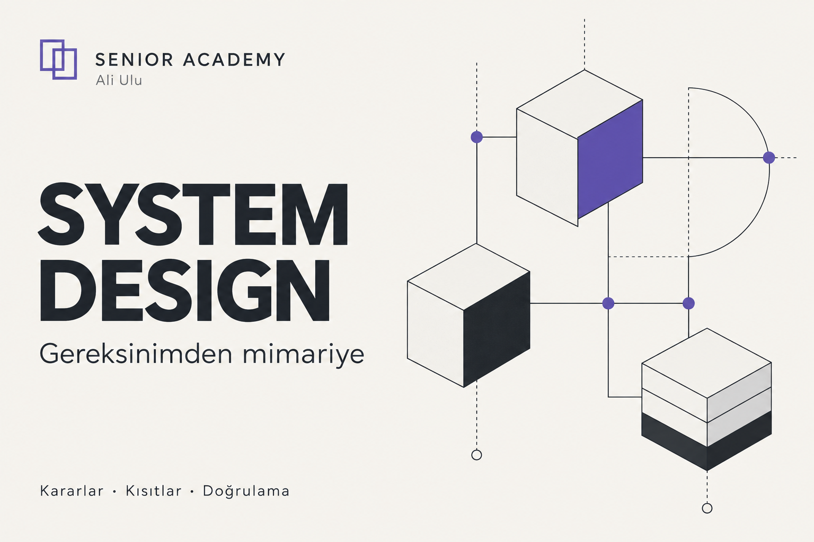

Seçili çalışmalar
Yaptığım işi, kararlarıyla birlikte gör.
Buradaki örnekler açık kaynak yazılım, geliştirilmekte olan eğitim ürünü ve danışmanlık yöntemidir. Müşteri referansı veya doğrulanmamış sonuç olarak sunulmuyor.
Açık kaynak ürün · Gerçek arayüz
LEVH
AI araçlarının oturumlar arasında aynı bağlamı kullanabilmesi için yerel çalışan bir hafıza katmanı.
Kaynağı incele ↗
Problem
Farklı AI araçları ve yeni oturumlar aynı proje kararlarını tekrar tekrar kullanıcıdan öğreniyor. Bağlamın yerel olarak saklanması, bulunması ve zamanla güncellenmesi gerekiyor.
Yaklaşım
SQLite üzerinde ortak bir hafıza, MCP üzerinden erişim, hatırlama sıklığına göre değişen önem ve çelişkili kayıtlar için inceleme akışı.
Bu, satılan danışmanlık paketinin veya bir müşteri işinin sonucu değil. Uygulamanın güncel kapsamı ve sınırları açık kaynak depoda görülebilir.
Açık kaynak yazılım · Çalışma örneği
HUQAN
AI ajanlarının iddiaları, izinleri ve eylemleri için kanıt ve politika katmanı üzerinde bir çalışma.
Kaynağı incele ↗
Problem
Bir ajanın işi yaptığını söylemesi ile yapılmış işi kanıtlamak aynı şey değil. Kaynak, kural ve sonuç incelenebilir olmalı.
Yaklaşım
Kanıt, kaynak bilgisi, politika kontrolü, insan onayı ve işlem kayıtlarını birlikte ele alan bir mimari.
Bu görsel kavramsal anlatımdır. Güncel özellikler, testler ve sınırlamalar için açık kaynak depoyu inceleyin.
Eğitim ürünü · Geliştiriliyor
Senior Academy
Yazılımın kavramlarını gerçek proje kararlarıyla bağlamayı amaçlayan çok alanlı eğitim ailesi.
Kataloğu incele ↗
Problem
Kod üretmek kolaylaştı; ama yapılan işin doğruluğunu anlamak ve değerlendirmek hâlâ eğitim gerektiriyor.
Mevcut çıktı
Altı programda 90 ders başlığı ve ayrı AI Foundations kaynağı var. Ölçme kalitesi, uygulamalar ve kurulum gerektirmeyen erişim tamamlanmadan satış açılmayacak.
Danışmanlık yöntemi · Örnek teslim
Engineering System
Belirsiz ihtiyaçtan uygulanabilir görev ve test zincirine giden proje mühendisliği yöntemi.
Örnek teslimi oku ↗İhtiyaç
→ karar
→ kanıt.
- Başlangıç
- Hangi problem, kim için?
- Plan
- İlk sürümün sınırı ve teknik tercih.
- Yürütme
- Ajana verilecek izin, görev ve durma koşulu.
- Kontrol
- Test, bulgu, kalan risk ve yayın kararı.
Ne gösteriyor?
Danışmanlık, tek seferlik fikir vermek değil; araştırma, kapsam, mimari, görev, doğrulama ve devir kararlarını bağlayan bir iştir.
Bağlı örnek kurgusaldır. Gerçek müşteri işi veya sonuç garantisi değildir.
Senin projen
Birlikte ne yapabiliriz?
Plan, web sitesi veya web uygulaması için mevcut durumunu anlat. İlk görüşmede uygun kapsamı belirleyelim.
Görüşme talep et ↗